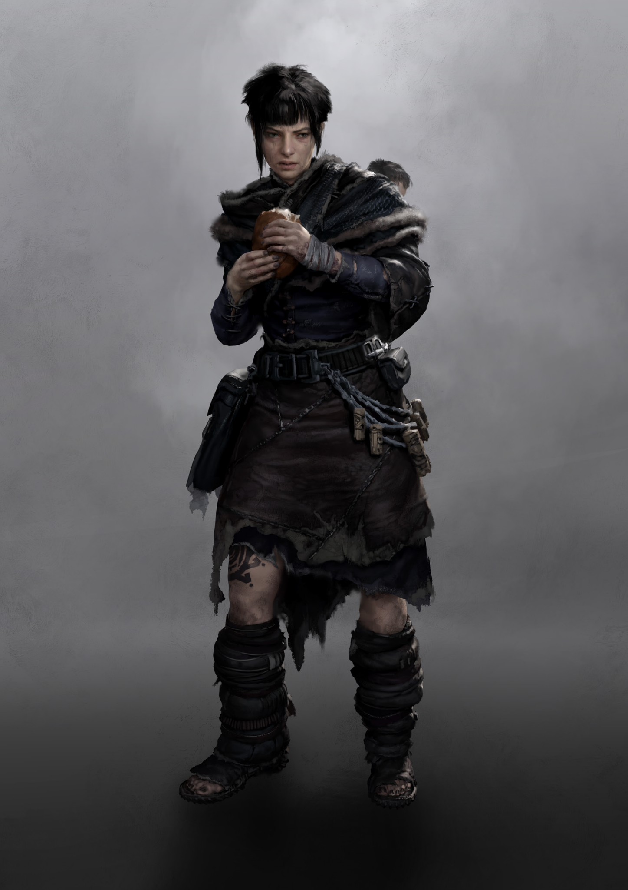

CLAN DOSSIER
Ganarids
Patience, wait for the return of the true King.
Clans of the Frontier pp. 21–23

DOWNFALL
Briefing
Lilian pressed herself against the cold walls of the Cathedral of Rennes, trying to calm her racing heart. Emissary Yasen led the procession, flanked by a secret guest from Cathedral City who had arrived to bless the ongoing mass conversion of Briton. As the new arrival approached, he gazed at Lilian, giving her the impression that he was piercing her most intimate thoughts. She couldn’t take her eyes off him. Was that a smirk on his face? Was he recognising her for who, what, she was? She chewed her lip, recounting the prayers of the Neognosis in her head, expelling every memory of Ganaress to shield her mind. “A rotten apple doesn't fall far from the tree,” he said in passing, and Lilian knew her cover was blown.
Downfall
It was the pinnacle of their lives, following their King through Briton, embracing the sublime peace and cooperation of his polity. There was nothing but Ganaress. Then their world was ripped apart.
The Ganarids remember the years following Ganaress’ death only as a hazy cloud. In their dreams their collective experiences all blend together, thousands of individual shards combining to form a single, blurred and indistinct meta-memory uniting the former polity. Each Ganarid is capable of picking out his own memories by day, but as sleep closes in the shared reality comes to the fore.
So the Ganarids found themselves roving through Briton, drifting from place to place as they tried to reignite old lives or find new ones. Everything was so different, so meaningless compared to what they had been through, even if they couldn’t reliably recall these experiences. Their feelings were blackened and their senses of taste dulled, and they lacked purpose. Entire years of continuity were blotched out and hidden by impenetrable fog. The Ganarids could only do what came naturally to them.
Holding Pattern
When a gust of wind blows a bee away from its hive, or a falling tree splits an ant from its colony, the insect does everything in its power to reconnect. The Ganarids, once linked together by the gentle embrace of Ganaress, are no different. They maintain their previous mannerisms, create Idols to their King, and try to rejoin with their former brethren who can be recognized with subliminal ticks and dull vibrations transmitted through the ether. However, that’s not enough. If they want to return to perfection, they must survive long enough until the opportunity arises. They need safety.
Mimicking the ant adapting its movements to another hive, the Ganarid must join a new hierarchy – a human one, instead of the Aberrant collective they’re used to. It’s a different framework, but the principle is the same. Thus, Ganarids worm their way into the existing structures, Cults, Clans, behaving like compliant members of their chosen organization, until they fully convince themselves of their new role. Only in the quiet moments where the call of the ether seeps back into their minds does knowledge of their ultimate goal grip them. Patience, wait for the return of the true King. Not long now…
Infestation
It was the sign they had been waiting for. On the Day of Ganaress, the insidious celebration of the slaughter of their King, the Ganarids received the signal. A beacon radiating out through the ether, dim for some but blinding for others. Malinesse, the Idol Bearer, calling them all toward salvation, and directing them to its source. The Atlantic.
The Black Water lures the Ganarids in, promising union, coalescence, and oblivion. At nightfall, when their collective dreams guide them to the waterfront, the Ganarids look out at the sea and witness the impossible fractals, feel the pull to step out into the deep, join with a new collective. They don’t understand, yet, but they know it will soon leave the ocean’s depths. It’s only a matter of time.
Two-Faced
The Ganarids occupy a unique position, one not encountered anywhere else in Europe. They appear as perfectly ordinary humans, and act like them for the most part, but they have experienced the glory of the Pheromancers like no other, thereby gaining insight into their machinations from a perspective unattainable by anyone outside of the collective. The Spitalians took advantage of this, keeping several Ganarids as test subjects in Montpellier where they are examined and conditioned to give up that insight to the Cult of Doctors.
INFILTRATION
Creating Ganarids
As a Clan, Ganarids have no shared, unified identity, no singular hierarchy, and no formal command structure. Instead, they have been forced to adapt to a new situation, following their own paths without leadership to support them. They find their way back into human society and join existing structures, hiding their true nature so thoroughly that only a concerted investigation tracing their path back years would be able to root out the deception. They are the most zealous Orgiastics, the most studious Orderlies, the most helpful Mechanists.
Creating a Ganarid character is a two stage process. First, points are distributed as normal using the Ganarid Skill bonuses, progressing through the Clan’s ranks in accordance with the recommended prerequisites until he reaches the highest rank possible. Potentials, Legacies, and Backgrounds are defined during the second stage.
Following the character’s initial creation as a Ganarid, he selects a Cult or Clan to infiltrate and become a part of. There is no restriction on which may be chosen, however Players should work with their Game Master to ensure that their choice is consistent and sensible with the world and game being played. The Ganarid then advances through his target’s hierarchy, choosing his Backgrounds as a member of that group and moving up their rank structure. The maximum rank in the target organization is equal to the step below the Ganarid’s rank in his own Clan – an Imago would be able to reach any level 3 rank, assuming he met its individual requirements.
Once the character’s final ranks have been defined, he chooses his Potentials, including those gained from Legacies, from the Common Potentials pool or the Potentials specific to his target Cult or Clan. The Player and their Game Master should be especially mindful of the position, attitudes, and relationships the Ganarid has built up, more than with typical characters. These could be with other Ganarids, wherever he has managed to find them, or with the members of his assumed organization.
THE CLAN
Hierarchy & Ranks
Select any rank to read its prerequisites, effect, and equipment.
THE COLLECTIVE